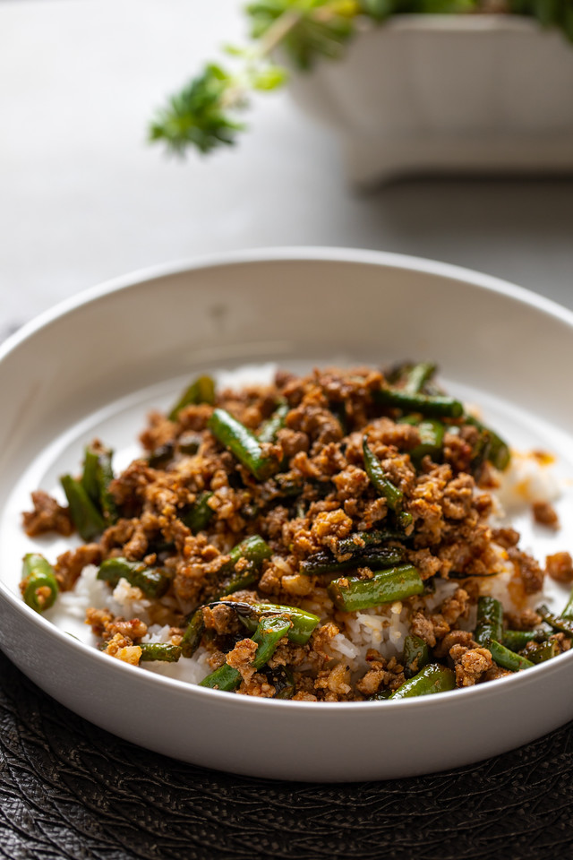

Dobby's String Beans

Description
A dish first made by Dobby after he tasted the same dish in Choi Garden, BGC. This is a savory dish that is best paired with copious amounts of white rice.
Ingredients
- 1/4kg ground pork
- 2 bundles of sitaw
- 1 piece red onion
- 4 cloves of garlic
- Cornstarch
- Oyster Sauce
- Salt
- Pepper
- Soy Sauce
- Cooking Oil
Steps
- Prepare the ingredients by mincing the onion and garlic. Slice the sitaw into appropriate sizes.
- Prepare a mixture of water and cornstarch. Mix 1 part cornstarch per 4 parts water. Adjust according to your preference
- Sautee onion and garlic in a pan, then add the ground pork once garlic is golden brown.
- Add the sliced sitaw into the pan. Stir-fry to your preference.
- Add soy sauce, salt, and pepper. Then add the cornstarch mixture (make sure to mix it again before adding.)
- Add 2-3 tablespoons of oyster sauce. Add cornstarch mixture to your preference
- Stir-fry until the ingredients are mixed and the sauce is coating the dish.
Return to Homepage